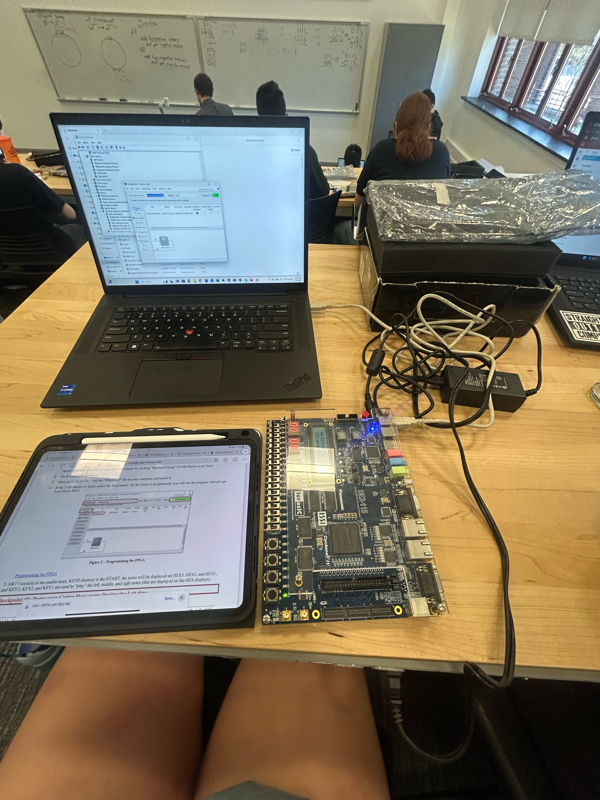

Projects
Rosie Bonfire Game
Object-Oriented Software DevelopmentUsed Eclipse to create the project with Java
- Produced a fully functional program that successfully adhered to the Five CSSE220 Object Oriented Design Principles
- Designed and implemented a UML diagram that used interfaces, abstract classes, and super and sub classes that adhered to guidelines specified.
- Planned and developed the project in three iterative development cycles with two other teammates
- Built a Java Swing GUI that visualized and reacted to differing events. (mouse clicks, keyboard clicks)
Digital Systems Guitar Hero Project
Use the software QuartusPrime and Verilog to create the Guitar Hero system. Uploaded the completed system to an Altera DE2 FPGA board.
- Used an Altera DE2 FPGA prototyping system to verify functionality of a complete system, modeling the game "guitar hero"
- Use simulation to verify FSM functionality
- Design a one-hot state machine to control registers in Datapath
- Verified FSM with functional waveform benchmarks in Quartus Prime